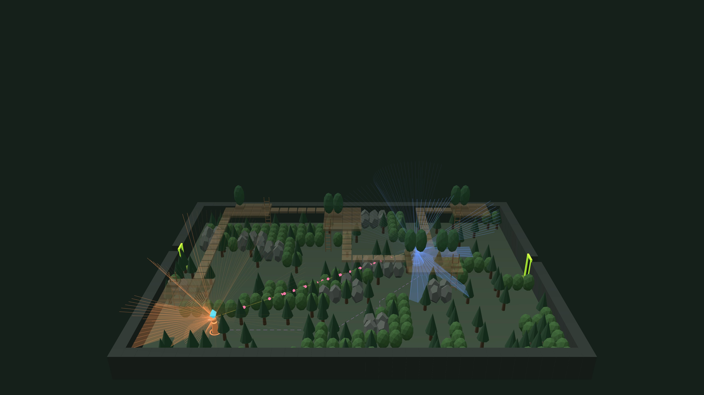

Spatial AI · Columbia GSAPP · Distance + Proximity
A diamond heist where four distances drive four senses
Sight · Euclidean
Hearing · Acoustic
Walking · Path
Sense of place · Perceptual
Ryan Fu · Lu Liu · Yifan Zhao
Sight
√(Δx² + Δy² + Δz²)
Seen only within 9 cells (the fog), inside a 120° forward cone, with nothing solid on the 3D line between the eyes.
Seen
Behind a tree
Behind the officer
Beyond 9 cells: fog
Hearing
Euclidean + Σ muffling
Heard within 12, in every direction. Each cell of material on the line adds: leaves 1, bush 1.5, tree 3, rock or floor 6.
10 in open air
≤ 12: heard
+1.5
+6
7 + 1.5 + 6 = 14.5
> 12: not heard
Walking · the bonus
shortest walk (Dijkstra)
Around obstacles and up ladders: 1 straight, √2 diagonal, 3 per ladder. Both AIs move along it.
Sense of place
‖r(a) − r(b)‖ over 362 rays
A and B are 15.5 cells apart, yet their fingerprints differ by only 22. A and a nook differ by 78.
A
B
Nook
Euclidean
Metric
All four axioms hold
Path
Metric
All four axioms hold
Acoustic
Semimetric
Triangle fails in 598 of 4,000 tests
Perceptual
Pseudometric
Two places can look identical
49.7%
police wins over 320 rounds
■ Caught before the theft · 39%
■ Escaped after a chase · 20%
■ Caught with the diamond · 10%
■ Escaped without being seen · 30%